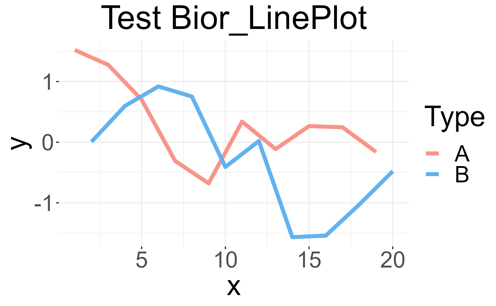

Line plot
Bior_LinePlot.RdCreate a line plot.
Usage
Bior_LinePlot(
data,
x,
y,
group = 1,
numeric.x.axis = FALSE,
combine = FALSE,
merge = FALSE,
color = "black",
palette = NULL,
linetype = "solid",
plot_type = c("b", "l", "p"),
size = 0.5,
shape = 19,
stroke = NULL,
point.size = size,
point.color = color,
title = NULL,
xlab = NULL,
ylab = NULL,
facet.by = NULL,
panel.labs = NULL,
short.panel.labs = TRUE,
select = NULL,
remove = NULL,
order = NULL,
add = "none",
add.params = list(),
error.plot = "errorbar",
label = NULL,
font.label = list(size = 11, color = "black"),
label.select = NULL,
repel = FALSE,
label.rectangle = FALSE,
show.line.label = FALSE,
position = "identity",
ggtheme = theme_pubr(),
title.hjust = 0.5,
text.size = 20,
...
)Arguments
- data
a data frame
- x, y
x and y variables for drawing.
- group
grouping variable to connect points by line. Allowed values are 1 (for one line, one group) or a character vector specifying the name of the grouping variable (case of multiple lines).
- numeric.x.axis
logical. If TRUE, x axis will be treated as numeric. Default is FALSE.
- combine
logical value. Default is FALSE. Used only when y is a vector containing multiple variables to plot. If TRUE, create a multi-panel plot by combining the plot of y variables.
- merge
logical or character value. Default is FALSE. Used only when y is a vector containing multiple variables to plot. If TRUE, merge multiple y variables in the same plotting area. Allowed values include also "asis" (TRUE) and "flip". If merge = "flip", then y variables are used as x tick labels and the x variable is used as grouping variable.
- color
line colors.
- palette
the color palette to be used for coloring or filling by groups. Allowed values include "grey" for grey color palettes; brewer palettes e.g. "RdBu", "Blues", ...; or custom color palette e.g. c("blue", "red"); and scientific journal palettes from ggsci R package, e.g.: "npg", "aaas", "lancet", "jco", "ucscgb", "uchicago", "simpsons" and "rickandmorty".
- linetype
line type.
- plot_type
plot type. Allowed values are one of "b" for both line and point; "l" for line only; and "p" for point only. Default is "b".
- size
Numeric value (e.g.: size = 1). change the size of points and outlines.
- shape
point shapes.
- stroke
point stroke. Used only for shapes 21-24 to control the thickness of points border.
- point.size
point size.
- point.color
point color.
- title
plot main title.
- xlab
character vector specifying x axis labels. Use xlab = FALSE to hide xlab.
- ylab
character vector specifying y axis labels. Use ylab = FALSE to hide ylab.
- facet.by
character vector, of length 1 or 2, specifying grouping variables for faceting the plot into multiple panels. Should be in the data.
- panel.labs
a list of one or two character vectors to modify facet panel labels. For example, panel.labs = list(sex = c("Male", "Female")) specifies the labels for the "sex" variable. For two grouping variables, you can use for example panel.labs = list(sex = c("Male", "Female"), rx = c("Obs", "Lev", "Lev2") ).
- short.panel.labs
logical value. Default is TRUE. If TRUE, create short labels for panels by omitting variable names; in other words panels will be labelled only by variable grouping levels.
- select
character vector specifying which items to display.
- remove
character vector specifying which items to remove from the plot.
- order
character vector specifying the order of items.
- add
character vector for adding another plot element (e.g.: dot plot or error bars). Allowed values are one or the combination of: "none", "dotplot", "jitter", "boxplot", "point", "mean", "mean_se", "mean_sd", "mean_ci", "mean_range", "median", "median_iqr", "median_hilow", "median_q1q3", "median_mad", "median_range"; see ?desc_statby for more details.
- add.params
parameters (color, shape, size, fill, linetype) for the argument 'add'; e.g.: add.params = list(color = "red").
- error.plot
plot type used to visualize error. Allowed values are one of c("pointrange", "linerange", "crossbar", "errorbar", "upper_errorbar", "lower_errorbar", "upper_pointrange", "lower_pointrange", "upper_linerange", "lower_linerange"). Default value is "pointrange" or "errorbar". Used only when add != "none" and add contains one "mean_*" or "med_*" where "*" = sd, se, ....
- label
the name of the column containing point labels. Can be also a character vector with length = nrow(data).
- font.label
a list which can contain the combination of the following elements: the size (e.g.: 14), the style (e.g.: "plain", "bold", "italic", "bold.italic") and the color (e.g.: "red") of labels. For example font.label = list(size = 14, face = "bold", color ="red"). To specify only the size and the style, use font.label = list(size = 14, face = "plain").
- label.select
can be of two formats:
a character vector specifying some labels to show.
a list containing one or the combination of the following components:
top.upandtop.down: to display the labels of the top up/down points. For example,label.select = list(top.up = 10, top.down = 4).criteria: to filter, for example, by x and y variabes values, use this:label.select = list(criteria = "`y` > 2 & `y` < 5 & `x` %in% c('A', 'B')").
- repel
a logical value, whether to use ggrepel to avoid overplotting text labels or not.
- label.rectangle
logical value. If TRUE, add rectangle underneath the text, making it easier to read.
- show.line.label
logical value. If TRUE, shows line labels.
- position
Position adjustment, either as a string naming the adjustment (e.g.
"jitter"to useposition_jitter), or the result of a call to a position adjustment function. Use the latter if you need to change the settings of the adjustment.- ggtheme
function, ggplot2 theme name. Default value is theme_pubr(). Allowed values include ggplot2 official themes: theme_gray(), theme_bw(), theme_minimal(), theme_classic(), theme_void(), ....
- title.hjust
(defaut: title.hjust = 0.5); title hjust value
- text.size
(defaut: text.size = 20); text size value
- ...
other arguments to be passed to geom_dotplot.
Examples
# Examples 1
data <- data.frame('x' = c(1:20), 'y' = rnorm(20), 'Type' = rep(c('A','B'), 10))
palette <- c("#f89588","#63b2ee")
Bior_LinePlot(data, x = "x", y = "y", color = "Type", title = "Test Bior_LinePlot",
palette = palette, plot_type = "l", size = 2, text.size = 30,
ggtheme = theme_minimal()) +
font("title", size = 35)
